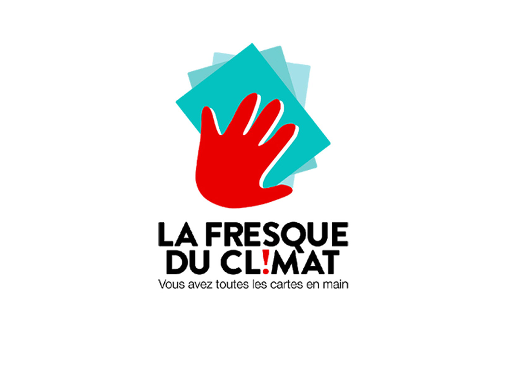
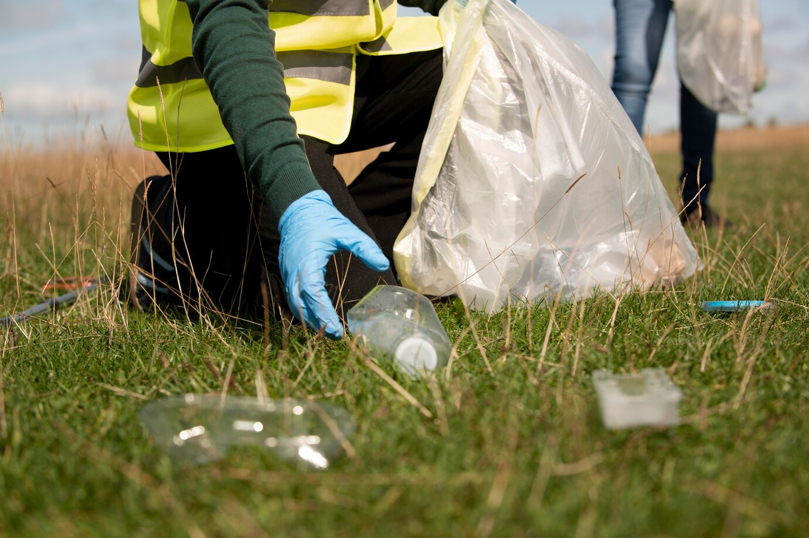
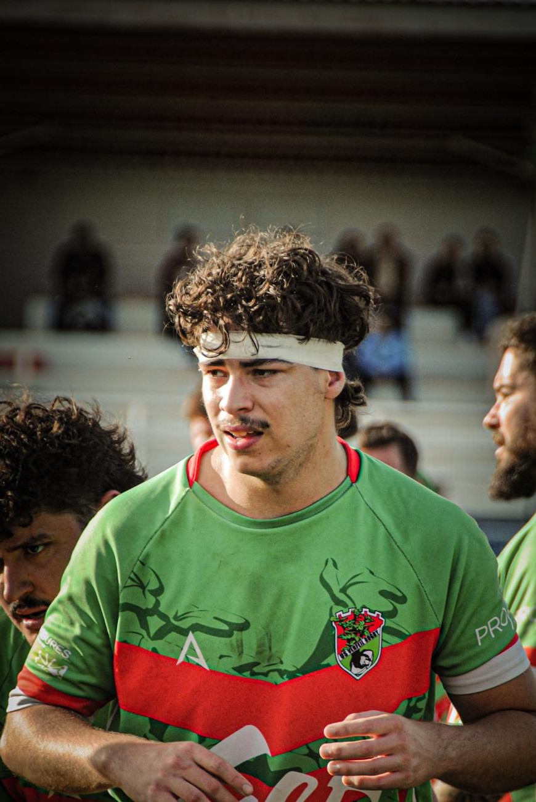

Boundary layer exploration on a flat plate
Laboratory exercise on the study of a boundary layer over a flat plate, conducted in a wind tunnel at the Institute of Fluid Mechanics of Toulouse (IMFT).
Engineering student at ENSEEIHT
Second-year engineering student at ENSEEIHT in fluid mechanics, energy and environment (MF2E) with a background in University preparatory class for higher education institutions (CUPGE) from the University of Toulouse.
Driven by a strong passion for applied physics and numerical simulation, I am looking to contribute to innovative R&D projects. Whether in aeronautics, water management, or environmental engineering, my goal is to leverage my analytical and computational skills to tackle complex fluid and energy challenges.
I am currently in my second year (4th year of Bachelor’s) studying fluid mechanics at ENSEEIHT. Below are the technical skills I have acquired thus far, along with a list of the courses I have taken. In the first year, the curriculum is the same for all students. Specialization begins in the second semester of the second year, with a choice between energy and the environment.
As I continue my studies, I intend to explore various areas of fluid mechanics, energy and environmental engineering before finalising my choice of final-year project (PFE). Next term, my exchange programme at ESEIAAT in Spain will enable me to deepen my knowledge of aerodynamics and CFD. To balance this focus, I am actively seeking a second-year work placement in the water or environmental sector to gain practical experience in sustainable resource management. During my third year at ENSEEIHT, I plan to enrol on the SEE-Aero (Water, Environment and Aerodynamics) specialisation to bridge the gap between these different fields.
Practical work and course projects produced during my engineering studies.
Laboratory exercise on the study of a boundary layer over a flat plate, conducted in a wind tunnel at the Institute of Fluid Mechanics of Toulouse (IMFT).
Development of a Fortran computational code to simulate the transport and diffusion of a concentration patch C1 within a vortex flow characterized by a concentration C0.
During my second year at the University of Toulouse, I had the opportunity to carry out a student research project at the Laplace laboratory for one month. As part of a group project on Feynman-Kac path space formulation, a theory combining probability and quantum mechanics, we were able to access the laboratory for a month, talk to researchers, and use the tools available there to advance our work. At the end, we had to give an oral presentation on all the work we had done.
Beyond the scientific knowledge that this project has given me, it has above all allowed me to discover the world of university research and how it works, but also to learn how to work in a group on a scientific research topic.
It was a great opportunity given to us by our professors, and we were able to seize it. We learned a tremendous amount during this month.
As part of an entrepreneurship program at N7, a small group of us worked on a simulation involving the creation of an innovative startup. Rather than launching a commercial venture right away, our goal was to use a fictional concept as a testing ground for practical experimentation, allowing us to master concrete entrepreneurial skills.
Over the course of the semester, we structured our project around six core strategic workshops:
This hands-on experience allowed me to step outside pure technical engineering and acquire essential business and interpersonal skills:
Explore my journey and my goals for the future.
After two years in preparatory classes at the University of Toulouse, I am now studying at ENSEEIHT, specialising in Fluid Mechanics, Energy and Environment (MF2E).
On this page, you will find my LinkedIn profile, my CV (in French and English), and a UVP video in which I present my background, my goals and my plans for the future.
On this page, I present initiatives in which I have participated or will participate to contribute to social and community life.
I regularly help organise the youth rugby tournament organised by my rugby club. I help with refereeing, recording results, compiling rankings and even preparing lunches.

At the beginning of the year, I created a climate mural with a group, which was displayed in the ENSEEIHT premises. This allowed me to discover the impact of human activities on the environment.

I took part in a “clean walk” organized by the N7 student union (BDE). It was a concrete initiative that raised my awareness of waste management issues and strengthened my commitment to eco-responsibility.
I will spend an exchange semester at the ESEIAAT in Terrassa, Spain, close to Barcelona.
As part of my 8th semester, I will have the opportunity to study at the ESEIAAT in Spain. During this exchange, I will specialise in aerospace engineering and advanced fluid mechanics. My curriculum will be strongly focused on simulation and on solving industrial problems: I will notably use open-source CFD (Computational Fluid Dynamics) and high-performance computing.
I will also have the opportunity to apply my programming skills (Python, MatLab, C++) to concrete problems in aerodynamics, thermal engineering and structural optimisation.
This semester will allow me not only to deepen my technical skills in aerospace, but also to develop my adaptability in a multicultural environment.
Outside of my studies, I enjoy staying active and getting involved in various extracurricular projects. These experiences help me develop teamwork, creativity, and leadership skills.

I have been playing rugby for over 15 years. I am passionate about it. Playing this sport has allowed me to develop my team spirit, discipline and perseverance, while strengthening my sense of commitment and sportsmanship.
I am currently learning the basics of photography (framing, settings, and processing with Lightroom) by having joined the Photo7 club, which captures moments from life at the school.
Outside of rugby, I like to stay active by running or playing football. I am also passionate about sports news and major competitions (following Stade Toulousain and TFC in particular).